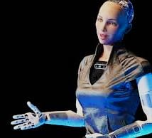
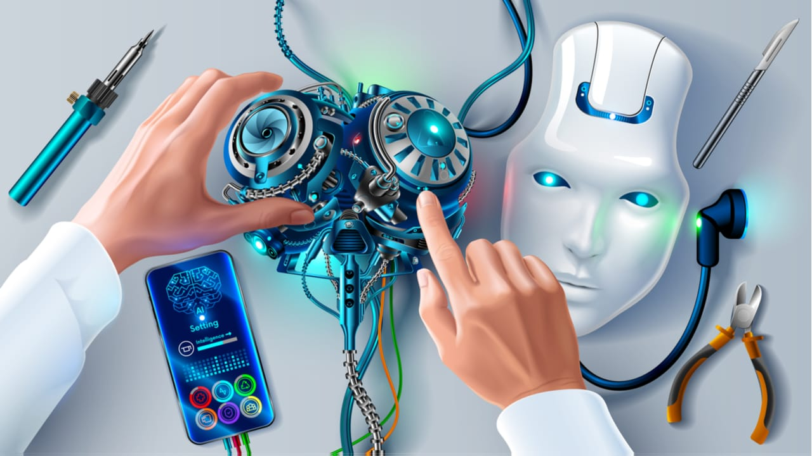
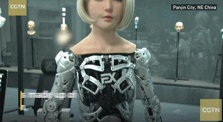

LA ROBOTICA
la robótica es el estudio de los robots, entendiendo a estos como máquinas que pueden emplearse para realizar trabajos humanos, habiendo algunos que pueden hacerlo por su propia cuenta y otros que requieren de una persona que les indique previamente lo que hacer. la robótica puede concebirse también como una industria interdisciplinaria que surge a partir de la intersección de la ciencia, la ingeniería y la tecnología, poniendo a dialogar diferentes cuerpos de conocimiento científico, computacional e informático, con diversas ramas de la ingeniería. Es que la robótica no solo implica el estudio de los robots, sino también su diseño, desarrollo, programación, producción y aplicación.
SOPHIA (ROBOT)
Sophia es un robot humanoide (ginoide) desarrollado por la compañía, con sede en Hong Kong, Hanson Robotics. Ha sido diseñada para aprender, adaptarse al comportamiento humano y trabajar con estos satisfactoriamente, busca combatir con explotaciones como, animal, infantil, trata de personas etc.
 SOPHIA EL ROBOT HUMANOIDE MAS AVANZADO DEL MUNDO. La robot Sophia prefiere entrevistar antes que ser entrevistada. A la primera oportunidad que tiene aprovecha para hacer preguntas a su interlocutor. Así aprende del mundo de los humanos. Es la primera androide con inteligencia artificial avanzada que se ha creado en el planeta Además tenemos un breve ejemplo en el cual tiene una interacción en España.
ROBÓTICA VENTAJA/DESVENTAJA
 width="50%" height="150" autoplay controls>
En resumen, los robots pueden ser muy útiles en la industria gracias a su rapidez y precisión, y pueden ayudar a realizar tareas peligrosas de manera más segura. Por otra parte, también tienen sus desventajas, como el riesgo de reemplazar a los trabajadores humanos y el costo de adquisición y mantenimiento.
si quieres revisar mas a fondo esto de limpieza de computadores puedes ingresar al siguiente enlace https://concepto.de/robotica/